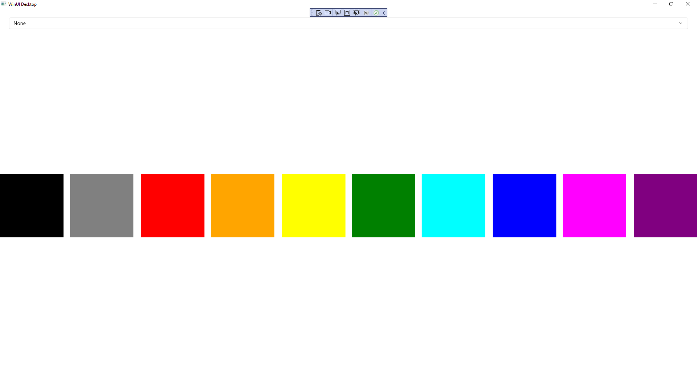
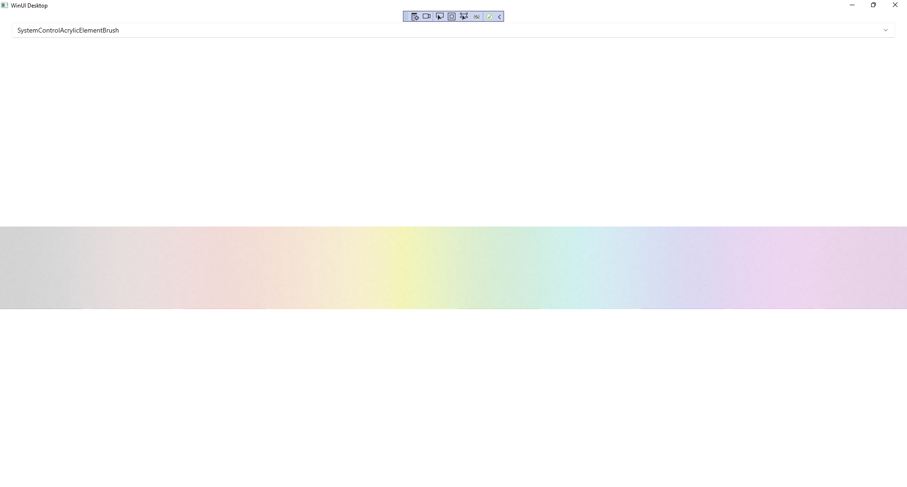

Acrylic Material
Learn about using Acrylic Material in Windows App SDK with this Tutorial
Acrylic Material shows how you can use AcrylicBrush with the Windows App SDK which can colour an
area of an application with a semi-transparent material that uses multiple effects including blur and noise.
Step 1
Follow Setup and Start on how to get Setup and Install what you need for Visual Studio 2022 and Windows App SDK.


Step 2
Step 3
In the XAML for MainWindow.xaml there will be some XAML for a StackPanel, this should be Removed:
<StackPanel Orientation="Horizontal"
HorizontalAlignment="Center" VerticalAlignment="Center">
<Button x:Name="myButton" Click="myButton_Click">Click Me</Button>
</StackPanel>
Step 4
While still in the XAML for MainWindow.xaml above </Window>, type in the following XAML:
<Grid>
<Grid.RowDefinitions>
<RowDefinition Height="Auto"/>
<RowDefinition Height="*"/>
</Grid.RowDefinitions>
<ComboBox Grid.Row="0" Margin="25" Name="Options" HorizontalAlignment="Stretch"
SelectionChanged="Options_SelectionChanged">
<ComboBoxItem IsSelected="True">None</ComboBoxItem>
<ComboBoxItem>SystemControlAcrylicElementBrush</ComboBoxItem>
<ComboBoxItem>SystemControlAcrylicElementMediumHighBrush</ComboBoxItem>
<ComboBoxItem>SystemControlBaseHighAcrylicElementMediumBrush</ComboBoxItem>
</ComboBox>
<Viewbox Grid.Row="1">
<Grid>
<StackPanel Spacing="5" Orientation="Horizontal"
HorizontalAlignment="Center">
<Rectangle Width="50" Height="50" Fill="Black"/>
<Rectangle Width="50" Height="50" Fill="Gray"/>
<Rectangle Width="50" Height="50" Fill="Red"/>
<Rectangle Width="50" Height="50" Fill="Orange"/>
<Rectangle Width="50" Height="50" Fill="Yellow"/>
<Rectangle Width="50" Height="50" Fill="Green"/>
<Rectangle Width="50" Height="50" Fill="Cyan"/>
<Rectangle Width="50" Height="50" Fill="Blue"/>
<Rectangle Width="50" Height="50" Fill="Magenta"/>
<Rectangle Width="50" Height="50" Fill="Purple"/>
</StackPanel>
<Rectangle x:Name="Overlay"/>
</Grid>
</Viewbox>
</Grid>
This XAML features a Grid containing a ComboBox which has some of the Acrylic Material colours that can be used with AcrylicBrush, it also contains another Grid with a StackPanel with Rectangle elements that will be used to demonstrate the AcrylicBrush and a Rectangle of Overlay which will be coloured with the AcrylicBrush.
Step 5
Step 6
In the Code for MainWindow.xaml.cs there be a Method of myButton_Click(...) this should be Removed by removing the following:
private void myButton_Click(object sender, RoutedEventArgs e)
{
myButton.Content = "Clicked";
}
Step 7
Once myButton_Click(...) has been removed, below the end of public MainWindow() { ... } type in the following Code:
private void Options_SelectionChanged(object sender, SelectionChangedEventArgs e)
{
if (Overlay != null && Windows.Foundation.Metadata.ApiInformation.IsTypePresent(
"Windows.UI.Xaml.Media.XamlCompositionBrushBase"))
{
string value = (Options.SelectedItem as ComboBoxItem).Content as string;
Overlay.Fill = value != "None" ?
Application.Current.Resources[value] as AcrylicBrush : null;
}
}
The Method of Options_SelectionChanged will be triggered by the Event of
selecting an item from the ComboBox then the code will check if the
Rectangle of Overlay has a value along with checking to see if the
Acrylic Material is supported, if so it will use the SelectedItem from
the ComboBox and will set the Property for Fill of the Rectangle of
Overlay to the AcrylicBrush that was selected in the ComboBox this
uses the Conditional Operator of ? and : where if the value before
the ? is true, then it will set the Fill to one of the Acrylic Material
resources, if it is false it will set it to null or have no Fill.
Step 8
Step 9
Once running you should see the ComboBox and the Rectangle Elements.

Step 10
If you select an item from the ComboBox you will see the Acrylic Material of the AcrylicBrush being applied to the Rectangle of Overlay.

Step 11